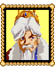
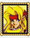

|
노바
본진으로 가서 동료들을 찾거라. 어디에 있는지 아느냐? 입구는 서쪽에 있다. |
 |
가디아나왕
서둘러 자네 동료들을 모으게나. 준비를 해야한다네. 준비가 다되었으면 다시 돌아오게나. |
 |
바리오스
고맙다, 맥스. 폐하께서 몹시 기뻐하시는구나. |
 |
워드
너같은놈이...
폐하께서는 도대체 무슨 생각을 하시는거지? |
|
하녀1
쳇! 정말 열받아! 너도 그렇게 생각하지? 응? 응? |
|
(아니오)
...이봐 아저씨! 아직 아무말도 안했다고. |
|
(예)
맞아! 진짜 열받지! 그 타오라는 계집이 있어. 이곳에 온 신참하녀였지. 그렇지만 걘 마법실력을 가지고 있었지. 안리공주님과 함께 공부를 한후 이제는 성의 마법사로 불린다고. 난 아직도 하녀인데... 흥! 정말 이런일들이 싫증이 난단말야! |
|
하녀2
이곳은 안리공주님의 방입니다. 하지만 안리공주님께선 현재 마나리나에 계세요. 마나리나라는곳을 아시나요? |
|
(아니오)
마나리나는 많은 훌륭한 마법사들의 땅이죠. 마법사의 나라라고 불려도 틀리지 않을정도지요! 안리공주님께서는 어렸을때부터 마법능력을 가지고 계셨지요. 그래서 그곳에서 공부하고 계신답니다. 공주님께서 돌아오시면 이곳에 마법학교를 연다고 하셨어요. 정말 굉장할거에요! |
|
(예)
와! 꽤 똑똑하시네요! 전 똑똑한 사람들이 좋아요! |
|
기사
내 두귀로 똑똑히 들었다! 네가 중요한 임무를 맡데 되었다니. 도대체 폐하와 바리오스님께서 무엇을 생각하고 계시는건지... 이해할수가 없어... |
|  |
매이
맥스......
네가 싫다거나 그런건 아냐, 하지만...
아버지께서 네편을 들기 시작하신후부터 성안에서의 아버지의 입지가 뭐랄까... 조금 복잡해지셨어. 무슨 이유인지는 몰라도 워드장관님께서는 너를 몹시 증오하셔. |
|
매이
용건없이는 성안에 들어오지 말라고. 아버지께 폐를 끼칠뿐이야. |
|
책장1
마법에 대한 많은 책들이 있다 :
"마법의 마나리나"
"초보자를 위한 마법습득법" |
|
책장2
마법에 대한 많은 책들이 있다 :
"나의 첫번째 블레이즈주문"
"마법사의 정신" |
|
책장3
마법에 대한 많은 책들이 있다 :
"볼트 주문 101가지 법"
"오트란트의 이야기" |
|
푯말
본진 입구 |
|
경비병
기다리고 있었다! 서둘러! 들어가라고! |
|
경비병(마을로 나가려고 하면)
맥스! 내가 본진으로 가는 길을 안내해줄게! |
|
경비병
맥스! 본진은 이쪽으로 들어가면 있어! |